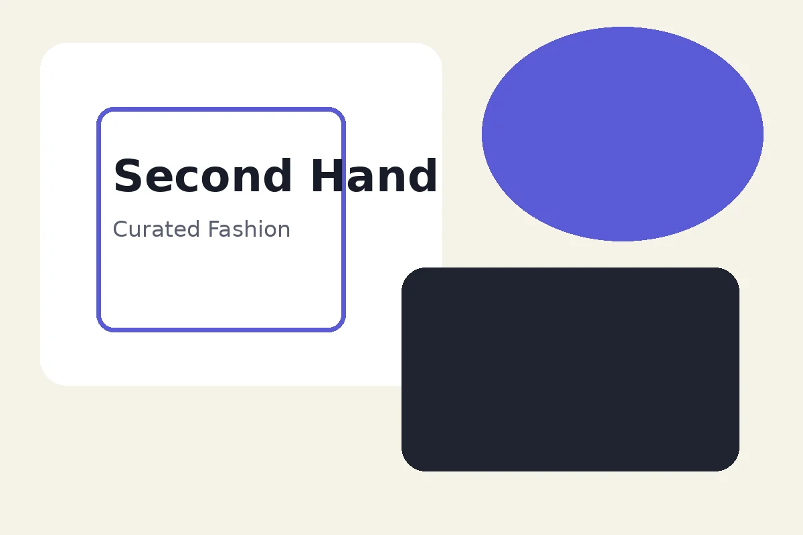

Outerwear
Jaket Vintage
Rp 120.000

Toko Baju Second Medan
Thrifseken menghadirkan pilihan baju second, thrift, dan fashion branded second untuk kamu yang ingin tampil keren, hemat, dan tetap percaya diri.

Apa Itu Thrifseken?
Thrifseken adalah toko baju second yang berfokus menyediakan koleksi fashion bekas berkualitas untuk pembeli di Medan dan sekitarnya. Kami menghadirkan berbagai pilihan pakaian seperti jaket vintage, kemeja kasual, celana retro, kaos, hoodie, dan item fashion second lainnya dengan harga yang tetap ramah di kantong.
Setiap produk di Thrifseken dipilih dengan memperhatikan kondisi, tampilan, dan kelayakan pakai. Dengan konsep thrift fashion, Thrifseken ingin membantu pelanggan mendapatkan pakaian yang unik, hemat, dan tetap stylish tanpa harus selalu membeli barang baru.
Produk Pilihan
Beberapa contoh item fashion second yang bisa kamu temukan. Stok dapat berubah mengikuti update katalog terbaru.
Mengapa Memilih Thrifseken?
Koleksi dipilih berdasarkan kondisi, tampilan, dan kelayakan pakai.
Pilihan fashion hemat untuk tampil keren tanpa biaya besar.
Banyak item thrift punya karakter unik dan sulit ditemukan di toko biasa.
Memberi kesempatan kedua pada pakaian yang masih layak digunakan.
Kategori
Temukan beberapa pilihan kategori fashion second yang disesuaikan dengan gaya harianmu.
Cara Order
Belanja di Thrifseken bisa dilakukan dengan mudah. Pilih produk, cek detail, lalu hubungi admin untuk memastikan stok, ukuran, kondisi barang, dan metode pembayaran.
Lihat katalog dan tentukan item yang sesuai dengan gayamu.
Tanyakan ukuran, kondisi, warna, dan foto tambahan jika dibutuhkan.
Konfirmasi stok dan lanjutkan proses pembayaran atau pengiriman.
Tentang Kami
Thrifseken hadir untuk membantu pelanggan mendapatkan pilihan fashion second hand terbaik dengan harga yang bersahabat. Kami percaya bahwa pakaian second berkualitas tetap bisa memberi tampilan yang keren, nyaman, dan bernilai.
Dengan semangat thrift fashion, Thrifseken juga mendukung gaya hidup yang lebih bijak dan berkelanjutan. Membeli baju second bukan hanya soal hemat, tetapi juga tentang memberi kesempatan kedua pada pakaian yang masih layak digunakan.
Pertanyaan Umum
Informasi singkat sebelum kamu memilih dan memesan produk thrift di Thrifseken.
Ya, Thrifseken menyediakan baju second, thrift, dan fashion bekas berkualitas yang telah dikurasi sebelum ditampilkan di katalog.
Thrifseken menargetkan pelanggan di Medan dan sekitarnya, namun pemesanan juga dapat dilakukan secara online sesuai ketersediaan produk dan layanan pengiriman.
Setiap produk memiliki kondisi yang bisa berbeda-beda. Kami menyarankan pelanggan mengecek foto, deskripsi, dan bertanya langsung kepada admin sebelum membeli.
Kamu bisa memilih produk dari katalog, lalu menghubungi admin melalui WhatsApp untuk menanyakan stok, ukuran, harga, dan proses pembayaran.
Hubungi Thrifseken
Untuk informasi produk, stok terbaru, dan pemesanan, silakan hubungi Thrifseken melalui kontak resmi berikut.